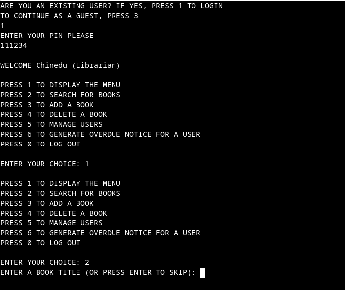

Chimdindu
Library Management
System
A functional command-line system for managing, storing and borrowing books in a library.

Project Overview
The Library Management System is a C++ console application that makes it easy to manage a library’s collection. Librarians can add and remove books, register members, and track which books are borrowed and returned, all from the terminal.
The Problem
Small libraries often track books with paper records or messy spreadsheets, which makes it hard to know what is available and who has borrowed what. There was a need for a simple, reliable system to keep everything organised.
Key Features
- Add, update and remove books
- Manage library members
- Borrow and return books
- Track availability in real time
Technologies Used
What I Learned
I learned how to apply object-oriented programming in C++, using classes to model books, members and loans. It also strengthened my understanding of data structures, file handling and writing clean, organised code.